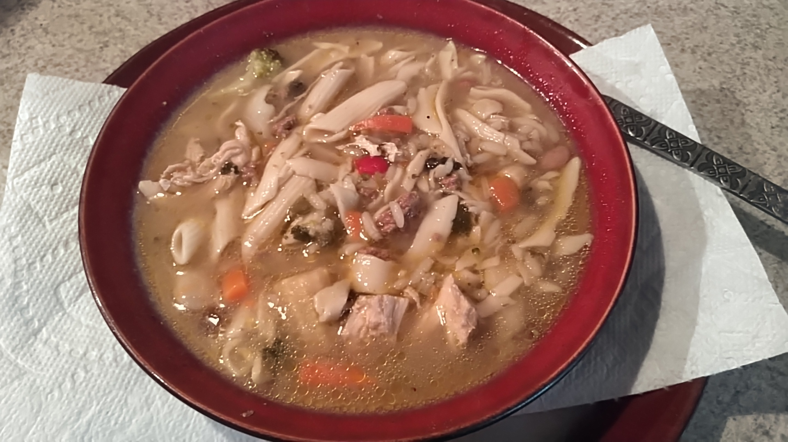

Home
Remember, good cooking is about Experimentation!
Law's Clean Veg and Meat Soup

A cleaner, fresher, and lower sodium soup than store bought canned.
Ingredients
- #3 cups or quarts of chicken or vegetable broth.
- #3 cups or quarts of water.
- #2 chicken breasts.
- 1/2 to 1 lb. grass-fed beef.
- #1 cup mixed or beans of choice.
- #3 cups vegetables of choice.
- Add rice if desired.
Cooking Instructions
This makes about 12 qts. of soup, so adjust the quantities as desired. Add the broth and water into a 20 qt. soup
kettle. Add the hardest and longest to cook ingredients first.
- Begin cooking the beans. Bring the mix to a boil, then simmer covered for 30 minutes.
- Add the rice if desired, maintain a simmer.
- Add fresh or frozen vegetables.
- Add seasoning to taste: Mild salt, pepper, etc.
- Chop up, separately half cook and add in the chicken pieces.
- Separately cook to medium, break up in pieces and add in the beef.
- Add pasta last. It will soften slowly. Adding too soon will cause it to shred.
- Season to taste with pepper, a little salt, etc.
- Allow to cool before storing in refrigerator.